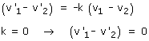

Choque totalmente inelástico
En un choque totalmente inelástico (k = 0) la condición de choque frontal se reduce a:

Esto significa que, tras el choque, los dos cuerpos se mueven con la misma velocidad (Han quedado unidos)